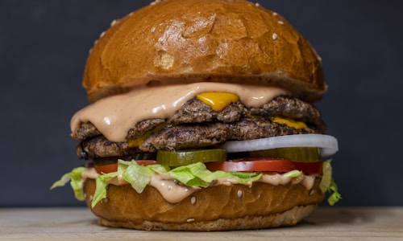
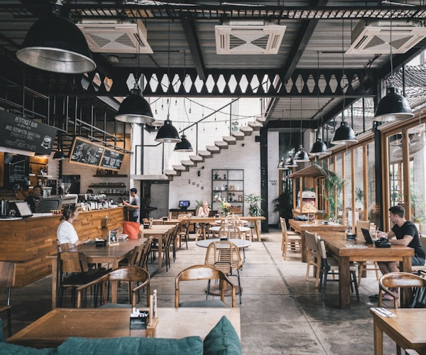
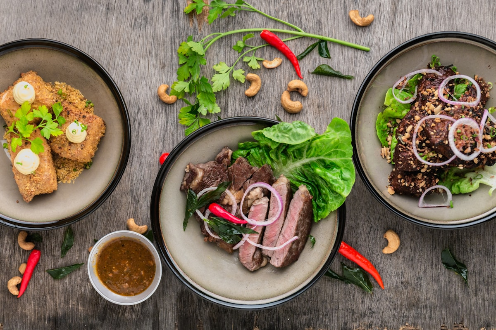

Lanche
Gabi Clássico
Pão macio, hambúrguer suculento, queijo e molho da casa.
Consulte o valor
Hambúrgueres caprichados, porções para compartilhar e aquele sabor que deixa qualquer encontro mais gostoso.
 Feito na hora
Feito na hora

O Restaurante do Gabi é um projeto de restaurante pensado para reunir sabor, praticidade e acolhimento. Aqui, o destaque fica para lanches e pratos preparados com atenção — perfeitos para uma pausa gostosa ou para dividir com quem você gosta.
Queremos que cada visita seja simples: escolha o que deu vontade, confira as informações e fale com a nossa equipe para confirmar pedidos, horários e disponibilidade.
Fale com a genteOpções ilustrativas para apresentar a proposta. Consulte a equipe para confirmar itens, valores e disponibilidade.

Uma pedida gostosa para acompanhar seu lanche ou compartilhar.

Combinação caprichada, preparada na hora para matar a fome.

Uma sobremesa especial para fechar a refeição com chave de ouro.

Uma sugestão saborosa para quem quer experimentar algo diferente.
Um pouco do clima e das delícias que inspiram o Restaurante do Gabi.



Entre em contato para confirmar endereço, horário de atendimento, opções do dia e formas de pedido.
Este formulário é demonstrativo e não envia dados. Adicione um e-mail, WhatsApp ou serviço de atendimento para receber mensagens.